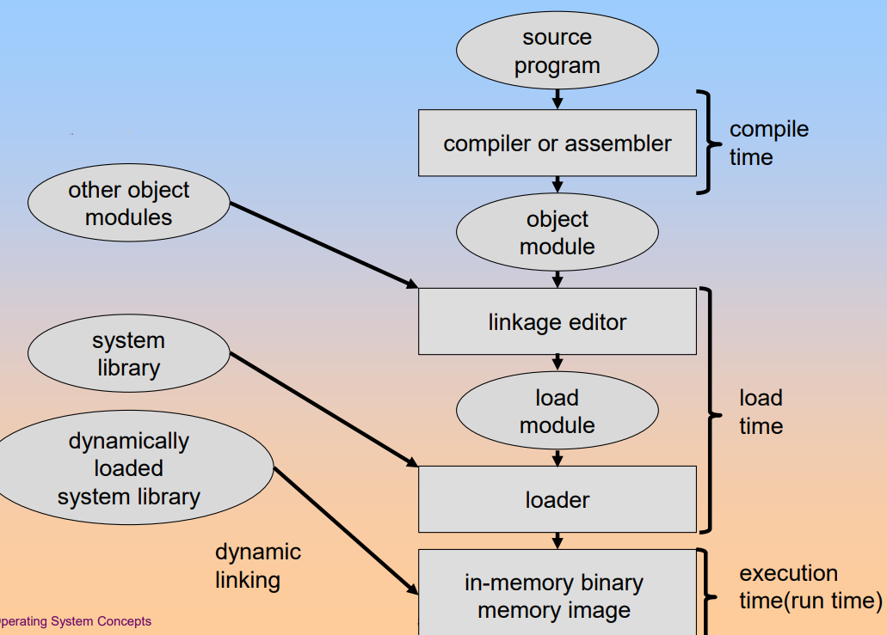
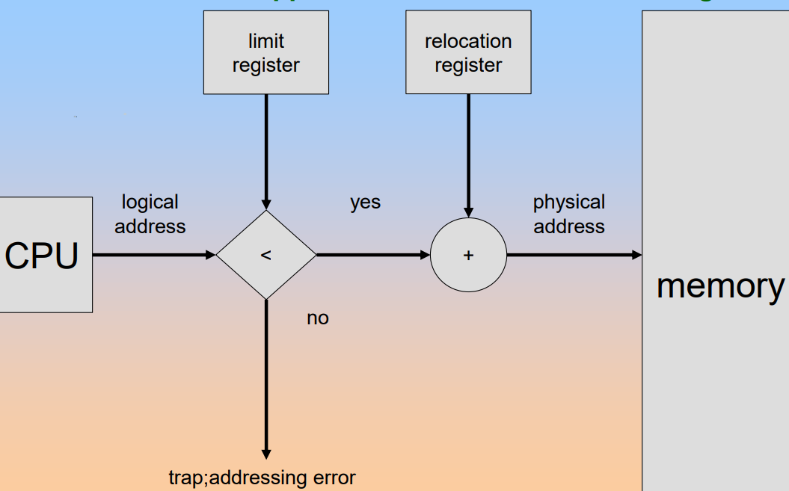
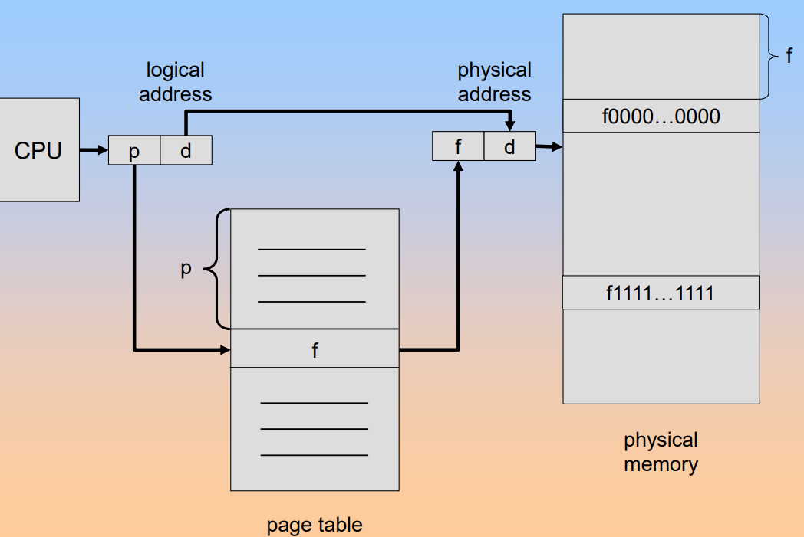
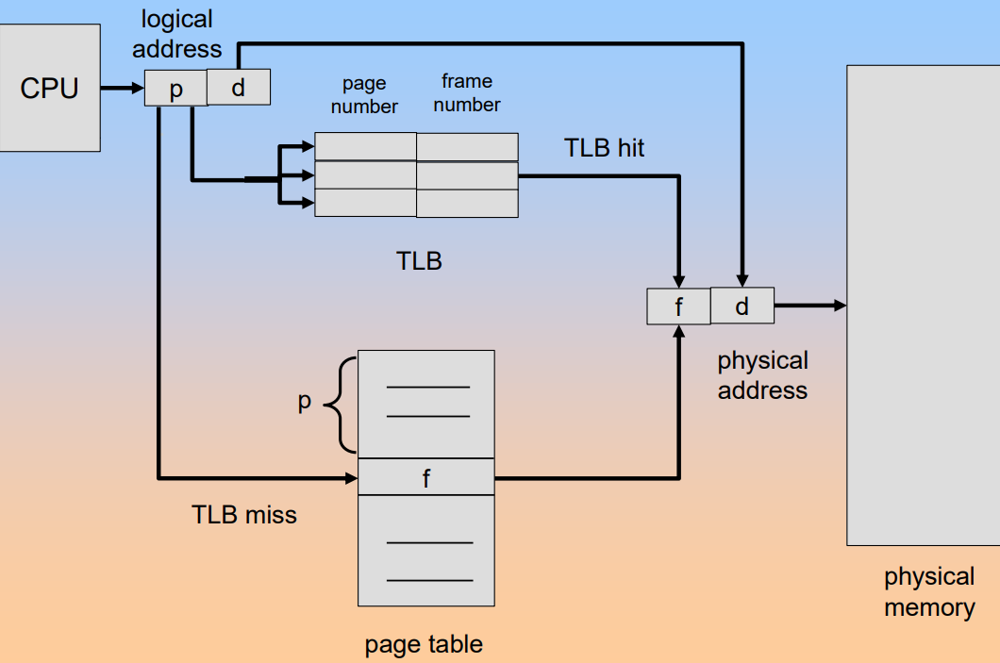
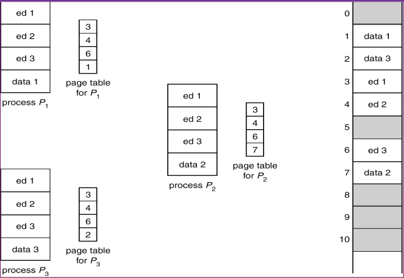
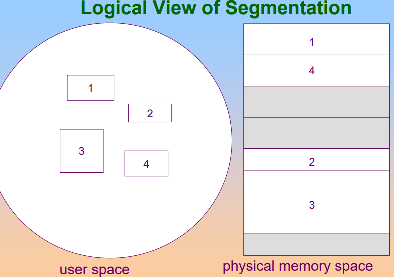
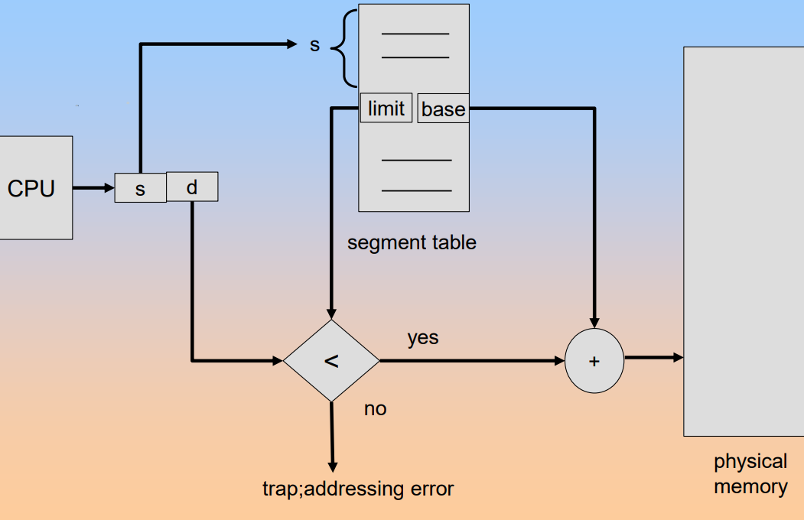

Memory Management
Background
The program must be brought into memory from disk and placed within a process for it to be run as main memory and registers are only storage CPU can access directly.
Register access in one CPU clock or less, main memory can take many cycles and cache sits between main memory and CPU registers.
Protection of memory required to ensure correct operation.
A pair of base and limit registers define the logical address space.

Binding of Instructions and Data to Memory
Address binding of instructions and data to memory addresses can happen at three different stages.
-
Compile time.
If memory location known a priori, absolute code can be generated. If starting location changed, must recompile code.
-
Load time:
Must generate relocatable code if memory location is not known at compile time.
-
Execution time:
Binding delayed until run time if the process can be moved during its execution from one memory segment to another. Need hardware support for address mapping, for example. base and limit registers.

Dynamic Loading and Dynamic Linking
The dynamic loading is that routine is not loaded until it is called. The advantages of dynamic loading are:
- Better memory space utilization as unused routine is never loaded.
- Useful when large amounts of code are needed to handle infrequently occurring cases.
- No special support from the operating system is required implemented through program design.
The dynamic linking is the linking postponed until execution time. Some small piece of code called stub is used to locate the appropriate memory resident library routine. When linking, stub replaces itself with the address of the routine and executes the routine. But operating system needed to check if routine in processes' memory address.
Dynamic linking is particularly useful for libraries.
Logical vs Physical Address Space
The logical address are generated by the CPU and referred to as virtual address.
The physical address are address seen by the memory unit.
The logical addresses and physical addresses are the same in compile-time and load-time address-binding schemes, but differ in execution-time address-binding scheme.
The Memory-Management Unit is the hardware device that maps virtual to physical address.
In MMU scheme, the value in the relocation register is added to every address generated by a user process at the time it is send to memory. So the user program deals with logical addresses, it never sees the real physical addresses.
Overlays
The overlays is to keep in memory only those instructions and data that are needed at any given time. It is needed when process is larger than amount of memory allocated to it.
The overlays are implemented by user and need no special support needed from operating system. But the programming design of overlay structure is complex.
Swapping
A process can be swapped temporarily out of memory to a backing store and then brought back into memory for continued execution. The backing store is always fast disk that is large enough to accommodate copies of all memory images for all users.
Roll out, roll in are swapping variants used for priority-based scheduling algorithms. Lower-priority process is swapped out so higher-priority process can be loaded and executed. Major part of swap time is transfer time, total transfer time is directly proportional to the amount of memory swapped.
Contiguous Memory Allocation
Main memory usually into two partitions:
- Resident operating system, usually held in low memory with interrupt vector.
- User processes then held in high memory.
Single Partition Allocation
Relocation register scheme used to protect user processes from each other and operating system code and data.
- Relocation register contains value of smallest physical address
- Limit register contains range of logical addresses

Multiple Partition Allocation
Memory are allocated by holes, which are blocks of available memory and holes of various size are scattered throughout memory. When a process arrives, it is allocated memory from a hole large enough to accommodate it.
To achieve such a scheme, the operating system maintains information about:
- Allocated partitions
- Free partitions

And there exists a problem: dynamic storage allocation problem, how to satisfy a request of size n from a list of free holes. Some algorithms:
- First Fit: allocate the first hole that is big enough.
- Best Fit: allocate the smallest hole that is big enough. This method must search entire list unless the list has been ordered by size. And using the method can produce the smallest leftover hole.
- Worst Fit: allocate the largest hole. This method also must search entire list and produces the largest leftover hole.
And allocation may lead to fragmentations:
- External fragmentation: total memory space exists to satisfy a request, but it is not contiguous.
- Internal fragmentation: allocated memory may be slightly larger than requested memory; this size difference is memory internal to a partition but not being used.
Can reduce external fragmentation by compaction: shuffle memory contents to place all free memory together in on large block. But compaction is possible only if relocation is dynamic and is done at execution time.
Paging
Logical address space of a process can be noncontiguous and process is allocated physical memory whenever the latter is available.
So divide physical memory into fixed-sized blocked called frames, the size is power of 2 always between 512 bytes and 8192 bytes. And divide logical memory into blocks of same size as frames called pages.
So achieve such a scheme, operating system needs to keep track of all free frames and when to run a program of size n pages, needs to find n free frames and load program. And operating system needs to set up a page table to translate logical to physical addresses.
Address Translation Scheme
The address generated by CPU is divided into two parts:
- Page number used as an index into a page table which contains the base address of each page in physical memory
- Page offset combined with base address to define the physical memory address that is sent to the memory unit

And the page table kept in main memory. The page table base register PTBR points to the page table, the page table length register PRLR indicates size of the page table.
But using this scheme lead to a problem that every data or instruction access requires two memory accesses: one for the page table and one for the real data and instruction.
The two memory access problem can be solved by the use of a special fast-lookup hardware cache called associative memory or translation look aside buffers TLBs.

Having the TLB , the address translation can be illustrated:

And having the TLB, the effective access time will be associated with the hit ratio, percentage of times that a page number is found in the associative registers, which is related to number of associative registers. And having the associative lookup costs time unit, assuming memory cycle costs time unit and the hit ratio is , the effective access time is:
Memory Protection
The memory protection is implemented by associating protection bit with each frame. And valid-invalid bit is attached to each entry in the page table:
- Valid indicates that the associated page is in the process' logical address space and is thus a legal page
- Invalid indicates that the page is not in the process' logical address space
Shared Page
Shared Code
One copy of read-only code shared among processes. So shared code must appear in the same location in the logical address sapce of all processes.
Private Code and Data
Each process keeps a separate copy of the code and data. The pages for the private code and data can appear anywhere in the logical address space.
There is a image for the processes with the same code to share code pages.

Structure of The Page Table
Hierarchical Paging
Break up the logical address space into multiple page tables. A simple technique is a two-level page table.
For example: a logical address(on 32-bit machine with 4K page size) is divided into:
- a page number consisting of 20 bits
- a page offset consisting of 12 bits
And the page table is paged, the page number is further divided into:
- 10-bit page number
- 10-bit page offset

Hashed Page Table
The virtual page number is hashed into a page table.

The question of hashing to avoid conflict. In this image, we store a chain of elements with the same hash value.
Inverted Page Table
One entry for each real page of memory. Entry consists of the virtual address of the page stored in that real memory location, with information about the process that owns that page.

Using this table decreases memory needed to store each page table but increases time needed to search the table when a page reference occurs.
Segmentation
Memory-management scheme that supports user view of memory. A program is a collection of segments. A segment is a logical unit such as:
- main program
- procedure
- function
- method
- ...

Segmentation Architecture
Logical address consists of two tuples: <segment-number, offset>。
Segment table maps the physical addresses and table entry has:
- base contains the starting physical address where the segments reside in memory
- limit specifies the length of the segment
And the program will has tow special registers:
-
Segment table base register STBR: points to the segment table's location in memory
-
Segment table length register STLR: indicates number of segments used by a program
Segment number s is legal when s < STLR
